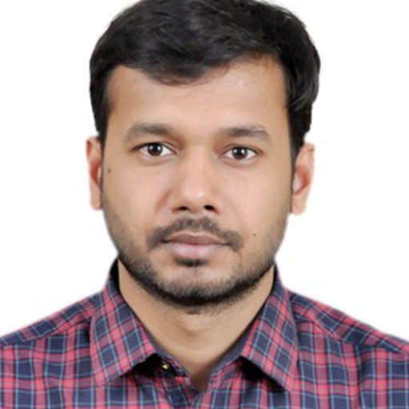

I am Nirbhay Kumar Singh.
Working as Deputy Manager in Bharat Electronics Limited.

My Profile
Mixed Signal Processing and DSP Design | RTL | Building & Implementing Innovations across the high-speed FPGA | IITM | Deputy manager (R&D) at Product development and innovation center, Bharat Electronics Limited(MoD)
Experienced Deputy Manager with a demonstrated history of working in the Defense & Aerospace industry.
Strong professional and technical knowledge while pursuing a Master's degree focused in Communication and Signal Processing from Indian institute of technology Madras (IITM).
8.5 years of experience in building and implementing innovations across the high-speed FPGA platform.
Work closely with system and digital leads to implement digital sub-systems and micro-architecture design specs to support ADC, DAC, PLL, DDS, and DSP products.
- Pioneer in engineering a single card solution for Digital transceiver for Mixed-signal processing using intel FPGA with SoC for Radar application.
- Developed Digital pre-distortion technique(DPD) using FPGA-based signal processing board and Matlab.
- Invented firmware for Digital transceivers and Timing generators for RAWL MKIIA, IFF RADAR, and five more projects in defense electronics.
- Received Excellent R&D award in the innovation category for the design and development of "Direct sampling receiver for IFF radar" in 2016-17.
- Received Excellent R&D award in the innovation category for the design and development of "Programmable RF and SoC based processing module for IFF MKXIIA - CIT" in 2019-20.
- Received Excellent R&D award in the innovation category for the design and development of "RFSoC based Integrated Processor Module " in 2020-23.
- Received Excellent R&D award in the Excellent Technology project for the design and development of "MKXIIA - CIT" in 2020-23.
- Skilled in RTL Design, VHDL, System Integration Testing, Algorithms and Matlab.
- Authored 6 patents, 2 copyrights, and 7 international papers demonstrating engineering marvels in defense and aerospace.